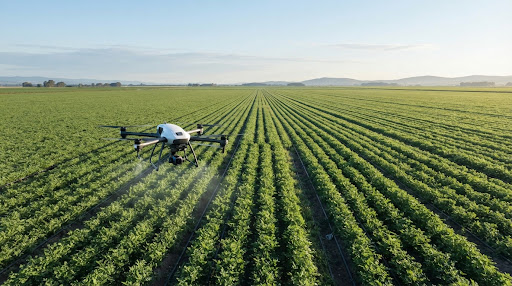
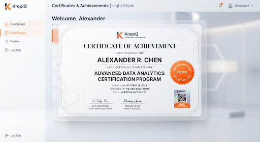
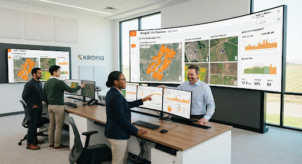

Business
Eight weeks
Farming As A Business
Build a farm P&L, price your produce with intent and plan a crop cycle around margin instead of habit.
Start here
View programme
India's trusted agriculture ecosystem for farmers and agripreneurs building profitable, sustainable farming businesses. Learn, decide better, and grow — with expert-led training, mentorship and practical tools in one place.

Revenue
28%
Yield
22%
Water saved
18%
Net profit
31%
Avg input cost saved
₹18,400/acre
40,000+
Farmers trained
40,000+
Learners
18
States reached
92%
Completion
150+
Modules
Why Kropiq
We do not teach farming techniques alone. We teach the decisions that determine whether a season turns a profit.
Every module ends in a decision framework — which crop, which input, which market, at which price. You leave knowing how to choose, not just how to do.
We work in cost per acre, break-even yield and return on every input. You build a farm P&L you actually use through the season.
Finish with a verified Kropiq credential tied to the field work you complete — evidence you can show a buyer, a lender or a partner.
Ask your question and get an answer grounded in your soil type, your district and your growth stage — from people who have stood in the same field.
Everything we teach works on Indian farms before it reaches a learner. We are farmers ourselves, and we stress-test the system first.
Guidance shifts with your region, crop cycle and market. A grower in Nashik and one in Guntur do not get the same answer.
Programmes

Build a farm P&L, price your produce with intent and plan a crop cycle around margin instead of habit.

Cut water and power costs per acre, and hold yield steady through an uneven monsoon. Includes drip ROI workings.

Plan, cost and run a polyhouse — from subsidy paperwork to nutrient scheduling to selling into a premium market.
How it works
Three steps, and you apply it on your own land.
Your crop, your district, your acreage. Kropiq builds a learning path from 150+ modules instead of handing you one fixed syllabus.
Structured modules, real case studies from Indian farms, and mentors who answer with specifics rather than generalities.
Submit field assignments on your own plot, earn your credential, and take a costed plan back to the farm.
Most training ends when the video does. Kropiq keeps going. Ask about your plot and you get an answer built around your soil, your crop stage and what the mandi is paying this week — not a general rule.
Kropiq Mentor
Irrigation That Pays For Itself · Module four
My borewell bill is climbing every month. Do I water longer or more often?
On your sandy loam, increase frequency, not duration. Long sets push water below the root zone — you pay for the pumping and the crop never sees it.
Three 12-minute cycles, four hours apart, holds moisture where the roots are. On four acres that is roughly ₹2,100 a month off your power bill. Shall we cost it out?

Credentials
Every Kropiq programme ends in a verified credential carrying a unique ID and the field work behind it. Use it with buyers, lenders, FPO boards and employers — anyone who can check it in one click.
Independently verifiable
Every certificate carries a public ID.
Assessed on your own plot
Field assignments, not multiple choice.
Learned in the field
Kropiq changed the way I farm. The knowledge is practical, easy to apply, and it works on my land.
I cut water and power cost by 22% in one season and the yield held. The irrigation module paid for itself in the first two months.
I inherited six acres and no idea where to start. I now run a crop plan, a cost sheet and a buyer list. That is the difference.
Kropiq for organisations
Cohort enrolment, progress tracking and outcome reporting for FPOs, agri-input companies, co-operatives and state programmes — with content shaped to your crops and districts.

Over 40,000 farmers and agripreneurs already learn here. Begin with the programme that matches your land.